<?xml version="1.0" encoding="UTF-8"?><rss version="2.0"
	xmlns:content="http://purl.org/rss/1.0/modules/content/"
	xmlns:wfw="http://wellformedweb.org/CommentAPI/"
	xmlns:dc="http://purl.org/dc/elements/1.1/"
	xmlns:atom="http://www.w3.org/2005/Atom"
	xmlns:sy="http://purl.org/rss/1.0/modules/syndication/"
	xmlns:slash="http://purl.org/rss/1.0/modules/slash/"
	>

<channel>
	<title> &#187; spieglein spieglein an der wand</title>
	<atom:link href="http://computationalspaces.org/projekte/spieglein-spieglein-an-der-wand/feed/" rel="self" type="application/rss+xml" />
	<link>http://computationalspaces.org</link>
	<description></description>
	<lastBuildDate>Mon, 07 Dec 2015 16:37:38 +0000</lastBuildDate>
	<language>de-DE</language>
	<sy:updatePeriod>hourly</sy:updatePeriod>
	<sy:updateFrequency>1</sy:updateFrequency>
	<generator>http://wordpress.org/?v=4.3.1</generator>
	<item>
		<title></title>
		<link>http://computationalspaces.org/spieglein-spieglein-an-der-wand/</link>
		<comments>http://computationalspaces.org/spieglein-spieglein-an-der-wand/#comments</comments>
		<pubDate>Fri, 16 Mar 2012 15:05:06 +0000</pubDate>
		<dc:creator><![CDATA[csadmin]]></dc:creator>
				<category><![CDATA[spieglein spieglein an der wand]]></category>

		<guid isPermaLink="false">http://computationalspaces.org/?p=2140</guid>
		<description><![CDATA[Kameras übersetzen Bewegung in narrative Installationen. Studierende des Departments Design und Informatik laden herzlich zu ihrer Ausstellung im Frappant ein. Frappant e. V. Zeiseweg 9 (Zugang Bodenstedtstraße) Viktoria-Kaserne 22765 Hamburg Link: www.frappant.org Vernissage Donnerstag, 15. März 19:00 Geöffnet Freitag, 16. März – Sonntag, 18.März 14–19:00 Ausstellende: Iwer Petersen, Tim Wienrich, Diana Burger, Julia Sundermeier, Nils [&#8230;]]]></description>
				<content:encoded><![CDATA[<p>Kameras übersetzen Bewegung in narrative Installationen. Studierende  des Departments Design und Informatik laden herzlich zu ihrer  Ausstellung im Frappant ein.</p>
<p><strong>Frappant e. V.</strong><br />
Zeiseweg 9<br />
(Zugang Bodenstedtstraße)<br />
Viktoria-Kaserne<br />
22765 Hamburg</p>
<p>Link: <a title="Öffnet einen externen Link in einem neuen Fenster" href="http://www.frappant.org/" target="_blank">www.frappant.org</a></p>
<p>Vernissage Donnerstag, 15. März 19:00<br />
Geöffnet Freitag, 16. März – Sonntag, 18.März 14–19:00</p>
<p><a href="../../../wp-content/uploads/image.jpg">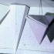</a> <a href="../../../wp-content/uploads/spieglein02.jpg"> </a> </a> <a href="../../../wp-content/uploads/spieglein04.jpg"></a> </a> <a href="../../../wp-content/uploads/spieglein05.jpg"></a> </a> <a href="../../../wp-content/uploads/spieglein08.jpg"></a> </a> <a href="../../../wp-content/uploads/spieglein09.jpg"></a> </a> <a href="../../../wp-content/uploads/spieglein14.jpg"></a> </a> <a href="../../../wp-content/uploads/spieglein06.jpg">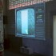</a> </a> <a href="../../../wp-content/uploads/spieglein07.jpg"></a> </a> <a href="../../../wp-content/uploads/spieglein10.jpg">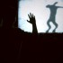</a> </a> <a href="../../../wp-content/uploads/spieglein12.jpg">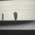</a> </a> <a href="../../../wp-content/uploads/spieglein13.jpg">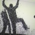</a></p>
<div class="video">
<iframe src="http://player.vimeo.com/video/40293333" width="400" height="225" frameborder="0" webkitAllowFullScreen allowFullScreen></iframe>
</div>
<div class="namen">
Ausstellende: Iwer Petersen, Tim Wienrich, Diana Burger, Julia Sundermeier, Nils   Evers, Jan Evers, Sandra Fulbrecht, Ognjen Jeftic, Stephan Ohm, Colette,   Janna Nikoleit, Soeren Rumpf, Jonas Ingler, Fabian Fabian, Tobias   Markmann, Sigurd Sippel, Raphael Kemmler, Rico Flaegel, Laura Stolte,   Gesa Helmsmüller, Marian Tietz, Martin Ketteler, Moritz Ahrens, Lucas   Jenß, Kolja Warnecke, Daniela Niemeyer, Heng Cao, Ralf Wengerodt (FLAR)  betreut von Prof. Franziska Hübler, Prof. Gunter Klemke, Prof. Birgit Wendholt</p>
</div>
]]></content:encoded>
			<wfw:commentRss>http://computationalspaces.org/spieglein-spieglein-an-der-wand/feed/</wfw:commentRss>
		<slash:comments>0</slash:comments>
		</item>
		<item>
		<title>Dynamic District</title>
		<link>http://computationalspaces.org/spieglein-spieglein-an-der-wand/</link>
		<comments>http://computationalspaces.org/spieglein-spieglein-an-der-wand/#comments</comments>
		<pubDate>Tue, 06 Mar 2012 10:19:12 +0000</pubDate>
		<dc:creator><![CDATA[District]]></dc:creator>
				<category><![CDATA[spieglein spieglein an der wand]]></category>

		<guid isPermaLink="false">http://computationalspaces.org/?p=1986</guid>
		<description><![CDATA[Gesa Helmsmüller, Laura Stolte, Raphael Kemmler, Rico Flaegel Idee Inspiriert von Kurt Schwitters Merzbau zeigt DYNAMIC DISTRICT einen Raum mit geometrischen, raumfüllenden Elementen, die eine abstrakte Projektionsebene bieten. Mit Merz bezeichnete Schwitters seine Technik, aus Zeitungsausschnitten, Reklame und Abfall Collagen zu erstellen. Als Gegenprojekt zu dem eher destruktiven Dadaismus sollten diese ab 1919 entstandenen Bilder und [&#8230;]]]></description>
				<content:encoded><![CDATA[<p>Gesa Helmsmüller, Laura Stolte, Raphael Kemmler, Rico Flaegel</p>
<p><iframe src="http://player.vimeo.com/video/39777662" width="400" height="225" frameborder="0" webkitAllowFullScreen mozallowfullscreen allowFullScreen></iframe></p>
<h4>Idee</h4>
<p>Inspiriert von Kurt Schwitters Merzbau zeigt DYNAMIC DISTRICT einen Raum mit geometrischen, raumfüllenden Elementen, die eine abstrakte Projektionsebene bieten. Mit Merz bezeichnete Schwitters seine Technik, aus Zeitungsausschnitten, Reklame und Abfall Collagen zu erstellen. Als Gegenprojekt zu dem eher destruktiven Dadaismus sollten diese ab 1919 entstandenen Bilder und Skulpturen für einen Wiederaufbau stehen. Schwitters sah im Gegensatz zu den Dadaisten, die Kunst ablehnten, seine Merz-Kunst als Kunst an und verteidigte Merz als einen „absolut individuellen Hut, der nur auf einen einzigen Kopf paßte,“ – auf seinen eigenen.</p>
<h4>Konzept</h4>
<p>Angelehnt an Schwitters Merzbau wollten wir eine den Raum einnehmende aber unvollendete und sich stetig verändernde Installation schaffen: Mehrere Styropor-Pyramiden bieten hierbei den Kern der Installation, eine abstrakte Oberfläche, auf die ein großer dunkler Partikelschwarm projiziert wird. Betritt der Betrachter den Raum, so wird seine Silhouette erfasst und er ist in der Lage, die umherschwirrenden Partikel zu bewegen und damit die im Raum herrschende Atmosphäre, Licht und Schatten, zu verändern. Je nach Standpunkt und Statue des Betrachters wird die Installation auf individuelle Weise wahrgenommen. Das anfangs starre Bild des Raumes entwickelt sich durch Interaktion des Besuchers zu einem dynamischen System. Ergänzend zu Schwitters war uns neben der Raum einnehmenden Installation auch der Aspekt der zwischenmenschlichen Interaktion wichtig: Betreten mehrere Betrachter den Raum, so werden alle Silhouetten erfasst; sie werden unweigerlich miteinander konfrontiert und in die Interaktion des Vorgängers eingebunden (sie können die Partikel abstoßen, mehr/weniger beschleunigen, etc.). Neben der Erfassbarkeit des eigenen Individuums („Spieglein, Spieglein …“) soll der Betrachter also mit der Erfassbarkeit der sozialen Gemeinschaft konfrontiert werden..</p>
<h4>Modellbilder</h4>
<p>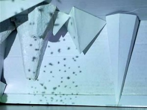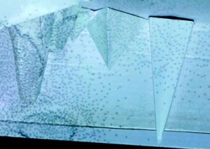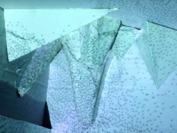</p>
<div>
<h4>Umsetzung</h4>
<p>Dieses Projekt wurde mittels Java und der Processing-library realisiert. Der Mensch wird durch eine Microsoft Kinectkamera erkannt, die per Middleware an dem Softwareprojekt angebunden ist. Für die Darstellung der einzelnen Partikel nutzen wir OpenGL, da eine große Anzahl von Objekten durch Processing nicht schnell genug dargestellt werden kann. Die Partikel selber sind in einem Partikelsystem zusammengefasst, das wir während des Projekts Schritt für Schritt weiterentwickelt haben. Wenn die Kinectkamera einen Menschen erkennt, wird der erkannte Bereich im Bild markiert. Ab diesen Zeitpunkt werden alle umliegenden Partikel den Bereich meiden und die innenliegenden Partikel bewegen sich zum Umriss der erkannten Person. Zusätzlich stehen zwei Aktionen bereit. Mit der ersten kann man einen Regen-/Wasserfall-Effekt aktivieren. Dabei fallen die Partikel nach unten, meiden den markierten Bereich und wenn sie aus dem Bild fallen, werden sie oben im Bild neu erzeugt. Mit der zweiten Aktion kann man die Partikel auf ihre Ursprungspositionen zurücksetzen, es wirkt somit wie ein Reset.</p>
<p></p>
<p>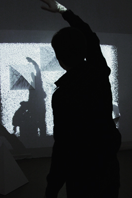</p>
<p></p>
<p>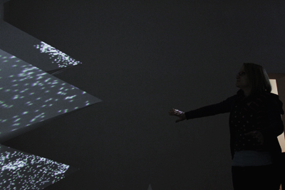</p>
</div>
]]></content:encoded>
			<wfw:commentRss>http://computationalspaces.org/spieglein-spieglein-an-der-wand/feed/</wfw:commentRss>
		<slash:comments>0</slash:comments>
		</item>
		<item>
		<title>Identität</title>
		<link>http://computationalspaces.org/spieglein-spieglein-an-der-wand/</link>
		<comments>http://computationalspaces.org/spieglein-spieglein-an-der-wand/#comments</comments>
		<pubDate>Mon, 05 Mar 2012 08:16:46 +0000</pubDate>
		<dc:creator><![CDATA[Identitaet]]></dc:creator>
				<category><![CDATA[spieglein spieglein an der wand]]></category>

		<guid isPermaLink="false">http://computationalspaces.org/?p=1975</guid>
		<description><![CDATA[Julia Sundermeier, Diana Burger (Textildesign) Iwer Petersen, Tim Wienrich (Informatik) Einleitung: Betrachten wir jeden Menschen ab einem direkten Zeitpunkt nach der Entstehung des eigenen Körpers &#8211; die Geburt-. Es entwickelt sich ein Aufwachsen, geprägt durch das Umfeld und die engsten Bezugspersonen. Mit der Umwelt und dem Umfeld verändern sich individuelle Charakterzüge, das personalisierte Wesen sowie [&#8230;]]]></description>
				<content:encoded><![CDATA[<p>Julia Sundermeier, Diana Burger (Textildesign)<br />
Iwer Petersen, Tim Wienrich (Informatik)</p>
<p><iframe src="http://player.vimeo.com/video/42352184" width="400" height="225" frameborder="0" webkitAllowFullScreen mozallowfullscreen allowFullScreen></iframe></p>
<p>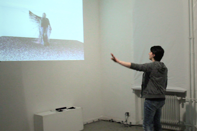</p>
<p>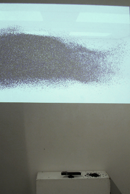</p>
<p>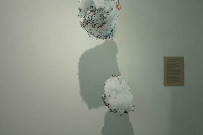</p>
<p>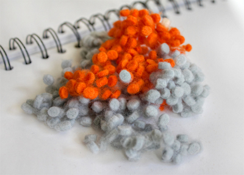</p>
<h4>Einleitung:</h4>
<p>Betrachten wir jeden Menschen ab einem direkten Zeitpunkt nach der Entstehung des eigenen Körpers &#8211; die Geburt-. Es entwickelt sich ein Aufwachsen, geprägt durch das Umfeld und die engsten Bezugspersonen. Mit der Umwelt und dem Umfeld verändern sich individuelle Charakterzüge, das personalisierte Wesen sowie vorerst grobe Veränderungen der eigenen Art zu sein. Ein regelmäßiger Kontakt zu anderen kann auch ein verhalten-ähnliches Nachahmen derer Umgangsstrukturen bedeuten und umgekehrt. Unbewusst nehmen Mitmenschen Wesenszüge eines Gegenüber an, die einem gefallen und das eigene Verhalten unterstreichen, vielleicht sogar verändern. Wie viel Du genau “nur” das Eigene Du bist ist nicht festzulegen.  Ein schrittweiser Abklang von Eigenschaften, Charakterzügen und Denkweisen passiert  und vielleicht sogar manchmal ohne dass man es will oder merkt. Warum? Andere lenken und prägen wiederum andere, du definierst dich durch den, der dich ein Stück weit im Leben begleitet. Manchmal sind es nur kurze Begegnungen oder eine jahrelange Begleitung die beide eine große Auswirkung auf den anderen haben kann.  Wir setzen uns aus gedanklichen und optischen Partikeln anderer zusammen &#8211; bis hin zu einem Zerfall, weil sich manch einer auch mal neu “ordnen” muss-. Eine Identität aus Identitäten anderer !?</p>
<p>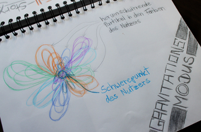</p>
<h4><strong>Die Idee:</strong></h4>
<p>In einem fortlaufenden Zyklus wollen wir die Identität des Betrachters in Form seiner optischen Darstellung aus Teilen zusammensetzen, die ein voriger Betrachter in der Szene hinterlassen hat.</p>
<p>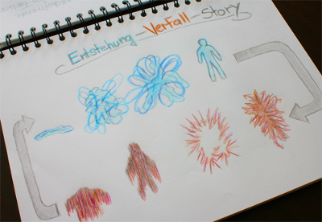</p>
<p>In diesem Zyklus soll der Betrachter entstehen und wieder zerfallen, so dass der nächste Betrachter nur einen Haufen Partikel seines Vorgängers vorfindet, aus denen er wiederum zusammengesetzt wird.</p>
<p>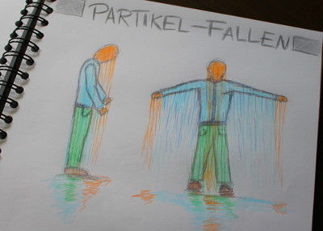</p>
<h4>Zu Technik:</h4>
<p>Wir lassen den Betrachter aus einigen Hunderttausend Partikeln entstehen, die lebendig werden. Um diesen Partikeln &#8220;Leben&#8221; einzuhauchen, unterlegen wir sie verschiedenen physikalischen Gesetzen, die entweder Erdanziehung oder aber Gravitation in planetarischem Maßstab suggerieren. Durch die bloße Anzahl der Partikel benutzen wir die Grafikkarte des Rechners nicht nur zur Darstellung mit <a href="http://www.opengl.org/" target="_blank">OpenGL</a>, sondern auch zur Simulation der Physik, der die Teilchen unterliegen mit der <a href="http://www.khronos.org/opencl/" target="_blank">Open Computing Language</a>. Zur Erkennung des Betrachters haben wir eine Microsoft Kinect Kamera verwendet, die Farb- und Tiefeninformationen bereitstellt und über <a href="http://code.google.com/p/simple-openni/" target="_blank">SimpleOpenNi</a> angesprochen wird. Um das Ganze dann zusammenzuführen verwenden wir die <a href="http://processing.org" target="_blank">ProcessingLibrary</a> in Java 1.6 für die Logik und das Hauptprogramm.</p>
<p><iframe width="400" height="301" src="http://www.youtube.com/embed/dQgkvG-LOy4" frameborder="0" allowfullscreen></iframe></p>
<address> </address>
]]></content:encoded>
			<wfw:commentRss>http://computationalspaces.org/spieglein-spieglein-an-der-wand/feed/</wfw:commentRss>
		<slash:comments>0</slash:comments>
		</item>
		<item>
		<title>Sorting hats</title>
		<link>http://computationalspaces.org/spieglein-spieglein-an-der-wand/</link>
		<comments>http://computationalspaces.org/spieglein-spieglein-an-der-wand/#comments</comments>
		<pubDate>Sun, 04 Mar 2012 10:31:01 +0000</pubDate>
		<dc:creator><![CDATA[Hut]]></dc:creator>
				<category><![CDATA[spieglein spieglein an der wand]]></category>

		<guid isPermaLink="false">http://computationalspaces.org/?p=2208</guid>
		<description><![CDATA[Colette Brown, Soeren Rumpf, Jonas Ingler, Janna Nikoleit Idee und Konzept Ausgangspunkt unserer Arbeit bildet das Thema Spiegelbild. Der Konzeptkünstler John Baldessari deckt in seinen Arbeiten oft die Gesichter der Personen, das Individuelle, durch grafische Flächen ab, wir hingegen konzentrieren uns auf das Gesicht und dessen „Aussehen&#8221; als Spiegel des Individuellen eines Menschen. Der Blick [&#8230;]]]></description>
				<content:encoded><![CDATA[<p>Colette Brown, Soeren Rumpf, Jonas Ingler, Janna Nikoleit</p>
<p><iframe src="http://player.vimeo.com/video/42356960" width="400" height="225" frameborder="0" webkitAllowFullScreen mozallowfullscreen allowFullScreen></iframe></p>
<h4>Idee und Konzept</h4>
<p>Ausgangspunkt unserer Arbeit bildet das Thema Spiegelbild. Der Konzeptkünstler John Baldessari deckt in seinen Arbeiten oft die Gesichter der Personen, das Individuelle, durch grafische Flächen ab, wir hingegen konzentrieren uns auf das Gesicht und dessen „Aussehen&#8221; als Spiegel des Individuellen eines Menschen. Der Blick in den Spiegel zeigt jedoch nicht nur das Äußerliche, durch die Kombination eines Portraits sowie neuen Gesichtsteilen werden Teile verdeckt. Gleichzeitig werden so Bereiche der Identität eines Menschen aufgedeckt, aufgezeigt und sichtbar.</p>
<p>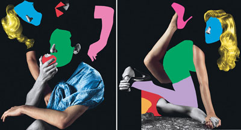<br />
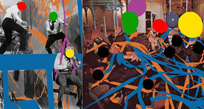</p>
<p>Entstanden ist die Idee einer Bühne, auf der ein Mensch Hüte aussetzten kann, als Repräsentation eines Kostüms. Das Aufsetzten eines Hutes, der Blick in den Spiegel, man sieht sich selbst aber man sieht mehr als nur die Hülle. Durch das Überlagern des Gesichtes durch Gesichtercollagen wird ein neuer Zugang zur eigenen Persönlichkeit möglich und regt zum Denken an.</p>
<p>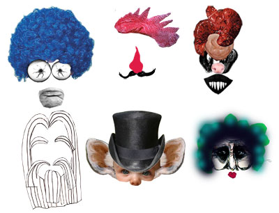<span style="font-size: x-small;"><br />
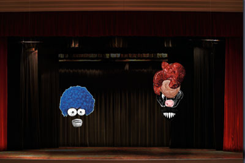<br />
</span></p>
<h4>Umsetzung im Raum</h4>
<p>Unsere Installation basiert auf 6 verschiedenfarbigen Hüten, die im Raum aufgehängt sind. welcher an eine Bühne erinnert. Den Hüten ist ein Pool an „Gesichtercollagen&#8221; zugeordnet, die wir aus Teilen von Fotos und Zeichnungen gestaltet haben. Die Besucher bewegen sich im Raum und können sich die Hüte aufsetzen. Der Hut wird „aktiviert&#8221;, das eigene Gesicht kombiniert mit einer zufällig aus- gewählten Collagen erscheint vergrößert auf der Projektionsfläche und bleibt. Die Person sieht sich selbst konfrontiert mit neuen Gesichtsteilen die witzig verstörend befremdend oder nachdenklich stimmen können.</p>
<p>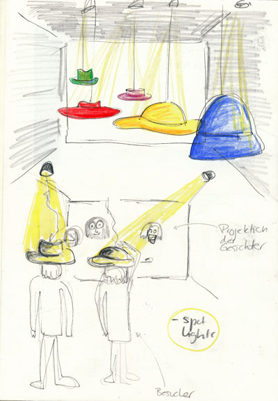</p>
<h4>Technische Umsetzung</h4>
<p>Zu Beginn nimmt die Kinekt ein Foto vom Besucher, später wird dieses für die Projektion verwendet. Die Kinekt erkennt die Hüte an ihrer Farbe, sobald der Hut bewegt wird und „aufgesetzt&#8221; wird, ist das ganze so programmiert dass das Portrait der Person projiziert wird und gleichzeitig eine der Collagen über das Bild gelegt wird. Wird der Hut abgesetzt, bleibt das neue Portrait der Person stehen. Ein Hut ist auf den Vorhang programmiert, wird er aufgesetzt, schließt sich der projizierte Vorhang und öffnet sich wieder, dabei löscht er die vorher projizierten Gesichter.</p>
<p>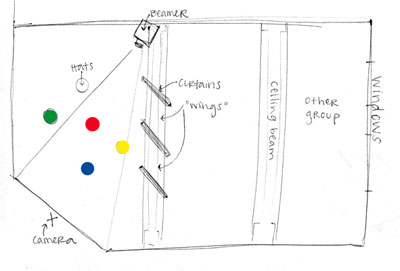</p>
<p>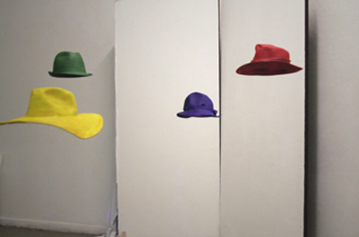</p>
<p>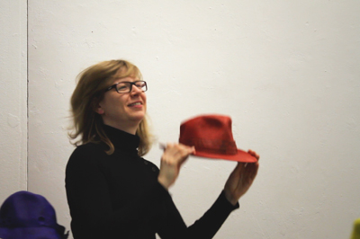</p>
<p>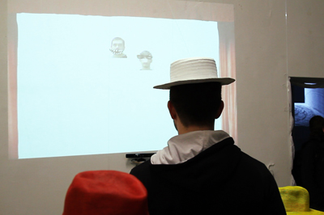</p>
]]></content:encoded>
			<wfw:commentRss>http://computationalspaces.org/spieglein-spieglein-an-der-wand/feed/</wfw:commentRss>
		<slash:comments>0</slash:comments>
		</item>
		<item>
		<title>SurgeRoom</title>
		<link>http://computationalspaces.org/spieglein-spieglein-an-der-wand/</link>
		<comments>http://computationalspaces.org/spieglein-spieglein-an-der-wand/#comments</comments>
		<pubDate>Sun, 04 Mar 2012 08:18:47 +0000</pubDate>
		<dc:creator><![CDATA[Surge]]></dc:creator>
				<category><![CDATA[spieglein spieglein an der wand]]></category>

		<guid isPermaLink="false">http://computationalspaces.org/?p=1983</guid>
		<description><![CDATA[Ein temporärer Aufenthalt in der Ideenwelt. Designer: Fabian Fabian Entwicklung: Sigurd Sippel, Tobias Markmann In der virtuellen Welt des SurgeRooms machen wir die Wellen sichtbar, die zwei Teilnehmer in den Raum schicken. Wellen von Teilnehmer A führen bei Teilnehmer B zu Wachstum und umgekehrt. Der SurgeRoom lässt den Besucher das Prinzip von Aktion und Reaktion, [&#8230;]]]></description>
				<content:encoded><![CDATA[<p><em>Ein temporärer Aufenthalt in der Ideenwelt.</em></p>
<p>Designer:<br />
Fabian Fabian</p>
<p>Entwicklung:<br />
Sigurd Sippel, Tobias Markmann</p>
<p><iframe src="http://player.vimeo.com/video/42340793" width="400" height="225" frameborder="0" webkitAllowFullScreen mozallowfullscreen allowFullScreen></iframe></p>
<p>In der virtuellen Welt des SurgeRooms machen wir die Wellen sichtbar, die zwei Teilnehmer in den Raum schicken. Wellen von Teilnehmer A führen bei Teilnehmer B zu Wachstum und umgekehrt.</p>
<p>Der SurgeRoom lässt den Besucher das Prinzip von Aktion und Reaktion, von Output und Input erfahren.</p>
<p>Er ist auch eine Analogie auf Lernen und Austausch: nur Input von außerhalb (Dialog, Feedback) führt zu Wachstum.</p>
<p>Zwischen den beiden Teilnehmern, die sich im realen Raum nicht sehen können, entsteht so ein Dialog, der nur durch die räumliche Beschränkung ein Ende findet.</p>
<p>Inspiration:</p>
<ul>
<li><a href="http://de.wikipedia.org/wiki/Balance_(Film\)">Balance</a></li>
<li><a href="http://de.wikipedia.org/wiki/Quintessenz_(Philosophie\)">Äther</a></li>
<li><a href="http://de.wikipedia.org/wiki/Eingabe_und_Ausgabe">Input/Output</a></li>
<li><a href="http://de.wikipedia.org/wiki/Gleichgewicht_(Physik\)">Equlibrium</a></li>
<li><a href="http://www.amazon.de/Talk-Me-Communication-Between-Objects/dp/0870707965/">Katalog &#8216;Talk to Me&#8217;</a></li>
<li><a href="http://www.ascot-elite.de/movies/index.php?movie_id=347">Renaissance: Paris 2054</a></li>
</ul>
<p>Technik</p>
<p>Realisiert wird die Benutzerinteraktion durch eine Kinect mit openkinect als Treiber. SimpleOpenNI übernimmt die Skeletterkennung, die durch NITE mit Gesten unterstützt wird. Die Grafik wird durch OpenGL (jogl) realisiert. Unsere Anwendung läuft auf der JVM mit Java 1.6 (64 Bit). Getestet wird Windows 7 und Mac OS 10.5 und 10.6.</p>
<p>Die Kinect ist durch einen Abstraktionslayer gekapselt und stellt eine Skeleton API zur Verfügung. Der visuelle Raum basiert auf der Bibliothek hemesh.</p>
<p><strong><em>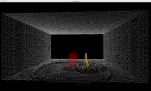</em></strong></p>
]]></content:encoded>
			<wfw:commentRss>http://computationalspaces.org/spieglein-spieglein-an-der-wand/feed/</wfw:commentRss>
		<slash:comments>0</slash:comments>
		</item>
		<item>
		<title>Kinetris</title>
		<link>http://computationalspaces.org/spieglein-spieglein-an-der-wand/</link>
		<comments>http://computationalspaces.org/spieglein-spieglein-an-der-wand/#comments</comments>
		<pubDate>Sat, 03 Mar 2012 18:18:42 +0000</pubDate>
		<dc:creator><![CDATA[kinetris]]></dc:creator>
				<category><![CDATA[spieglein spieglein an der wand]]></category>

		<guid isPermaLink="false">http://computationalspaces.org/?p=2125</guid>
		<description><![CDATA[Designer: Kolja Warnecke Umsetzung und Entwicklung: Heng Cao, Ralf Wengerodt, Daniela Niemeyer Idee Die Entwicklung eines Tetris-spiels, mit neuartiger Steuerung. Durch Gesten kann der Spieler selbst bestimmen, welche Steine erscheinen Steuerung Nachdem ein Spieler sich vor der Kamera durch eine Armhaltung &#8220;eingeloggt&#8221; hat startet das Spiel und der Spieler kann durch verschiedene Geesten beeinflussen, was [&#8230;]]]></description>
				<content:encoded><![CDATA[<p>Designer:<br />
Kolja Warnecke</p>
<p>Umsetzung und Entwicklung:<br />
Heng Cao, Ralf Wengerodt, Daniela Niemeyer</p>
<p><iframe src="http://player.vimeo.com/video/42342581" width="400" height="225" frameborder="0" webkitAllowFullScreen mozallowfullscreen allowFullScreen></iframe></p>
<p></p>
<h4>Idee</h4>
<p>Die Entwicklung eines Tetris-spiels, mit neuartiger Steuerung.<br />
Durch Gesten kann der Spieler selbst bestimmen, welche Steine erscheinen</p>
<h4>Steuerung</h4>
<p>Nachdem ein Spieler sich vor der Kamera durch eine Armhaltung   &#8220;eingeloggt&#8221; hat startet das Spiel und der Spieler kann durch   verschiedene Geesten beeinflussen, was für ein Stein als nächstes  &#8220;herunterfällt&#8221;.  Wenn der Spieler nicht agiert und eine Geeste macht,  kommt ein  zufälliger Stein. Dabei ist es ausgeschlossen, dass zwei selbe  Steine hintereinander  erscheinen. Durch bewegen auf einer Fläche ist es  möglich, die Position  des fallenden Steins  zu verändern. Mit einer Kreisbewegung der linken Hand ist es dem Spieler möglich den   fallenden Stein zu drehen, mit einer vertikalen &#8220;Wischbewegung&#8221; den Stein direkt nach unten fallen zu lassen.</p>
<h4>Spielermodi</h4>
<p>Kinetris kann allein oder zu zweit gespielt werden.  Wenn bereits ein  Spieler aktiv ist und ein zweiter dazu kommt, wird der Spielfeldstatus  des ersten kopiert und dem zweiten Spieler übergeben damit beide  gleiche Chancen haben. Wenn ein Spieler eine Zeile mit Steinen  vervollständigt, verschwindet sie auf seinem Spielfeld und auf dem  Spielfeld des gegners erscheint am unteren Rand eine Zufallsreihe und  blockiert dieses.</p>
<p></p>
<p></p>
<p><strong> </strong></p>
<p><strong> </strong></p>
<h4>Zur Technik</h4>
<p>Das Spiel ist vollständig selbst in Java 1.6 implementiert. Als  technische Erweiterung nutzen wir Processing, OpenCV und SimpleOpenNI.  Die Gesten des Nutzers werden selbst ausgewertet indem Punkte (z.B. die der  rechten Hand) aus einem begrenzten vergangenen Zeitraum gespeichert und  untersucht werden ob sie zusammen einen Kreis oder auch andere Formen  die wir über das Spiel nutzen wollen bilden.</p>
<h4>Entwicklung und Verlauf</h4>
<p>Zu Beginn gab es Schwierigkeiten in Bezug auf die vielen möglichen  Hilfsbibliotheken und deren Zusammenarbeit. In der Nutzung der Kinekt  gab es kurzzeitig noch den Ansatz Objekterkennung zur Skeletterkennung  dazu zu nehmen. Es sollten noch große Blöcke als Hilfestellung zur  Steuerung und Blockauswahl genutzt werden. Diese Idee wurde aber wieder  verworfen. Tests an der Steuerung und Gestenerkennung gestalten sich  ebenfalls schwer, weil kaum reproduzierbar. Die Feineinstellung der  Gestenerkennung benötigt viele Probespiele.</p>
]]></content:encoded>
			<wfw:commentRss>http://computationalspaces.org/spieglein-spieglein-an-der-wand/feed/</wfw:commentRss>
		<slash:comments>0</slash:comments>
		</item>
		<item>
		<title>Creatio ex nihilio</title>
		<link>http://computationalspaces.org/spieglein-spieglein-an-der-wand/</link>
		<comments>http://computationalspaces.org/spieglein-spieglein-an-der-wand/#comments</comments>
		<pubDate>Tue, 10 Jan 2012 15:19:48 +0000</pubDate>
		<dc:creator><![CDATA[NN]]></dc:creator>
				<category><![CDATA[spieglein spieglein an der wand]]></category>

		<guid isPermaLink="false">http://computationalspaces.org/?p=1988</guid>
		<description><![CDATA[Sandra Fulbrecht, Ognjen Jeftic, Stephan Ohm, Nils Evers, Jan Evers Idee: Im Ursprung geht es bei der Idee um Deformation. Unsere Intention war es, dem Besucher dies nicht nur visuell, sondern vor allem als Gefühl zu vermitteln. „Ein Gefühl garantiert nichts, ein Gefühl kann auch nicht täuschen.Ein Gefühl hat keine Wirklichkeit außerhalb der Psyche, die [&#8230;]]]></description>
				<content:encoded><![CDATA[<p>Sandra Fulbrecht, Ognjen Jeftic, Stephan Ohm, Nils Evers, Jan Evers</p>
<p><iframe src="http://player.vimeo.com/video/39779674" width="500" height="281" frameborder="0" title="Creatio ex nihilio" webkitallowfullscreen mozallowfullscreen allowfullscreen></iframe></p>
<h4>Idee:</h4>
<p>Im Ursprung geht es bei der Idee um Deformation. Unsere Intention war es, dem Besucher dies nicht nur visuell, sondern vor allem als Gefühl zu vermitteln.</p>
<p>„Ein Gefühl garantiert nichts, ein Gefühl kann auch nicht täuschen.Ein Gefühl hat keine Wirklichkeit außerhalb der Psyche, die sie spürt.Es ist kein Ereignis, keine Sache.Es wurzelt in sich selbst.Deshalb kann es vergänglich erscheinen wie ein Nachtfalter oder unsterblich wie ein Gott.“</p>
<p style="text-align: right">-Karl Jaspers-</p>
<p>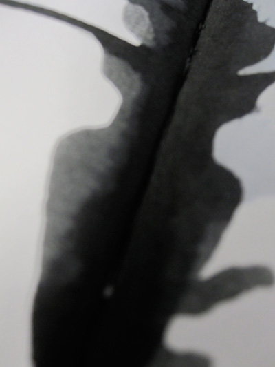</p>
<p>Die Wahl des darstellenden Mediums fiel auf einen sich verselbständigenden Schattenriss.Dieser sonst konstante Begleiter soll durch seine Deformation das Gefühl des Verlustes der Selbstkontrolle simulieren/darstellen.Dieses Gefühl entsteht durch die Form der Eigenständigkeit des Schattens.</p>
<h4>Gestalterische Umsetzung:</h4>
<p>Machtlosigkeit, Einsamkeit, Kontrollverlust und Befindlichkeitsstörung sollten im Raum der Installation bei dem Betrachter hervorgerufen werden.Als Stilmittel wurde hierfür die Dunkelheit eingesetzt.Um die Räumlichkeiten abzudunkeln wurden Seitenwände und der Fußboden mit schwarzer Folie beklebt.Beim Betreten des Raumes kommt der Besucher in einen nahezu leeren schwarzen Raum.Das einzige, vorhandene Objekt in dem Raum ist einrauschender Röhrenfernseher.Die Schattenprojektion startet, wenn der Mitwirkende sich in der Mitte des Raumes befindet.Eine Art schwarz/weißes Bildflimmern, wie man es von Bildstörungen bei Fernsehgeräten kennt, wird an der Wand erzeugt.Auf dieser Fläche sieht der Teilnehmer nun seinen Schatten.In der ersten Phase bewegt sich der Schatten noch seinem Akteur zugehörig.Kurze Zeit später beginnt der Schatten zu mutieren sowie sich zu deformieren.Der Schatten entwickelt ein Eigenleben und verformt sich nun unabhängig von der eingefangenen Silhouette.</p>
<p>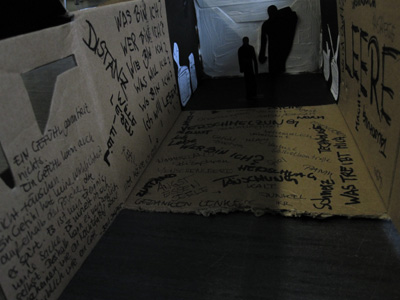</p>
<p>Als weiteres Element zur Beeinflussung der Sinne, wurde ein permanentes und unangenehmes Geräusch der Installation hinzugefügt.Dies soll zusätzliche zur Dunkelheit beim Bertachter  ein Gefühl des Unwohlseins auslösen.Verlässt der Teilnehmer den Raum, verstummt der Ton und das projektierte Bildrauschen endet. Der Raum hüllt sich wieder in Stille und Dunkelheit.</p>
<h4>Technische Umsetzung:</h4>
<p>Für die Technische Umsetzung wurde eine Kinect, das Kinect for Windows sdk und das Microsoft XNA-Framework verwendet. Verwendet wurde hier hauptsächlich das Infrarotbild für die Schatten-Silhouette, so wie die Gelenkposition der beiden Hände. Der Hauptaugenmerk unserer Installation wurde auf Postprocessing-Effecte via Pixelshader gelegt.So kam ein Unschärfefilter für die Darstellung des Schattens zum Einsatz, so wie verschiedene Verzerrungs-Effekte um eine Bildkrümmung eines Röhrenfernsehers zu simulieren. Der Schatten selbst wurde ebenfalls durch einen Verzerrungsfilter verändert, welcher durch die Position der Hände in Stärke und Amplitude verändert werden konnte. Via Alphablending und einer Noise-Textur wurde ein Bildrauschen erzeugt.</p>
]]></content:encoded>
			<wfw:commentRss>http://computationalspaces.org/spieglein-spieglein-an-der-wand/feed/</wfw:commentRss>
		<slash:comments>0</slash:comments>
		</item>
		<item>
		<title>Dissolving Art</title>
		<link>http://computationalspaces.org/spieglein-spieglein-an-der-wand/</link>
		<comments>http://computationalspaces.org/spieglein-spieglein-an-der-wand/#comments</comments>
		<pubDate>Tue, 10 Jan 2012 15:17:48 +0000</pubDate>
		<dc:creator><![CDATA[Deformation]]></dc:creator>
				<category><![CDATA[spieglein spieglein an der wand]]></category>

		<guid isPermaLink="false">http://computationalspaces.org/?p=1978</guid>
		<description><![CDATA[Designer: Moritz Ahrens, Martin Ketteler (Modedesign) Entwicklung: Marian Tietz, Lucas Jenß Idee: Ausgangspunkt der Arbeit „Dissolving ART“ war die Auseinandersetzung mit den Begriffen Deformation und zufällige Farbflächen. Unsere Idee war es den Teilnehmer dazu aufzufordern aktiv in Farbflächen einzutauchen und selbst über die Deformation zu bestimmen. Bei der projektbezogenen Recherche kam der Gedanke auf, dass [&#8230;]]]></description>
				<content:encoded><![CDATA[<p>Designer: Moritz Ahrens, Martin Ketteler (Modedesign)<br />
Entwicklung: Marian Tietz, Lucas Jenß</p>
<p><iframe src="http://player.vimeo.com/video/39778776" width="500" height="281" frameborder="0" title="Dissolving Art" webkitallowfullscreen mozallowfullscreen allowfullscreen></iframe></p>
<h4>Idee:</h4>
<p>Ausgangspunkt der Arbeit „Dissolving ART“ war die Auseinandersetzung mit den Begriffen Deformation und zufällige Farbflächen. Unsere Idee war es den Teilnehmer dazu aufzufordern aktiv in Farbflächen einzutauchen und selbst über die Deformation zu bestimmen. Bei der projektbezogenen Recherche kam der Gedanke auf, dass wir uns mit der gegenständlichen Malerei auseinandersetzen wollen. Wir entschlossen uns letztendlich für der Landschaftsmalerei, da wir offenen Räume als geeignete Bühne für unser Projekt empfinden.</p>
<p>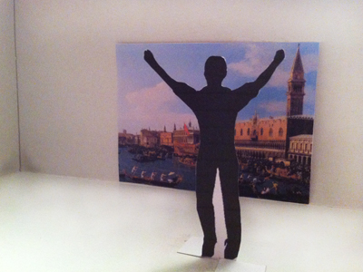</p>
<p>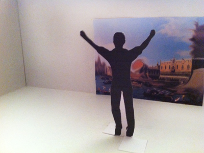</p>
<h4>Konzept:</h4>
<p>Um von seiner Umgebung nicht abgelenkt zu werden, setzt der Teilnehmer kabellose Kopfhörer auf, über welche er begleitend Musik zu hören bekommt. Als Werkzeug dient ein Schwamm, welcher mit roten LEDs versehen ist. Der Schwamm ruht auf einem Ausgangspunkt, erst wenn dieser angehoben wird, beginnen die LEDs zu leuchten.</p>
<p>Der Teilnehmer tritt vor die Kamera, wird in das Bild projiziert und so für die Zeit, in welcher er im Bild agiert, zum temporären Bestandteil des Bildes. Es beginnt eine Zeitreise durch die Landschaftsmalerei der letzten 400 Jahre, bei welcher der Teilnehmer bestimmt, wie lange er in einer Epoche verweilen möchte. Mit Hilfe eines Schwammes, besteht die Möglichkeit die Gemälde durch Verwischen zu deformieren und so neue Farbflächen zu schaffen, allerdings nur für die Dauer seiner Aufenthaltes. Durch eine schnelle Bewegung der Arme wird ein Wechsel der Bilder verursacht. Die Bilder erscheinen zufällig und nicht chronologisch, der Teilnehmer hat dennoch jederzeit die Möglichkeit zu bereits besuchten Bilden zurückzureisen. Am selbstbestimmten Ende der Reise legt der Teilnehmer den Schwamm wieder auf den Ausgangspunkt, die LEDs erlöschen und die von ihm geschaffenen Deformationen werden zurückgesetzt.</p>
<p>Der Teilnehmer wird in „Dissolving ART“ für die Zeit seiner Aktion in der Projektion zu einem Gast-Künstler. Er allein bestimmt ob und wie sehr er die Gemälde deformieren möchte und wie lange er in seiner Position als Schöpfer des temporären Kunstwerkes verweilen möchte.</p>
]]></content:encoded>
			<wfw:commentRss>http://computationalspaces.org/spieglein-spieglein-an-der-wand/feed/</wfw:commentRss>
		<slash:comments>0</slash:comments>
		</item>
	</channel>
</rss>
